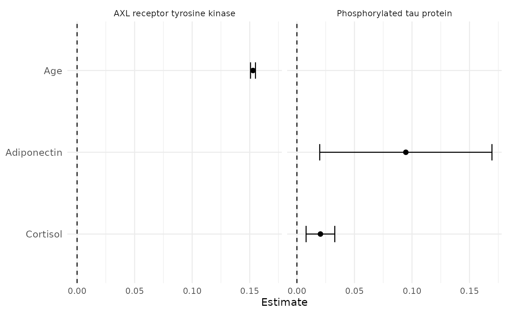

Univariate Regression Table
Source:R/MakeUnivariateRegressionTable.R
MakeUnivariateRegressionTable.RdCreates a list of univariate regression tables with variable labels and standardized coefficients (if specified).
UnivariateRegressionTable() was renamed to
MakeUnivariateRegressionTable() in SciDataReportR 20.5.0 to match the
package's Make* naming convention. It remains available as a
backwards-compatible synonym.
Usage
MakeUnivariateRegressionTable(
data,
outcome_vars,
predictor_vars,
covariates = NULL,
Standardize = FALSE,
Method = c("auto", "lm", "logistic"),
LogisticExponentiate = TRUE,
ReturnModels = FALSE,
Relabel = TRUE,
TreatOrdinalAs = "Categorical",
Data = lifecycle::deprecated(),
OutcomeVars = lifecycle::deprecated(),
PredictorVars = lifecycle::deprecated(),
Covars = lifecycle::deprecated()
)
UnivariateRegressionTable(
data,
outcome_vars,
predictor_vars,
covariates = NULL,
Standardize = FALSE,
Method = c("auto", "lm", "logistic"),
LogisticExponentiate = TRUE,
ReturnModels = FALSE,
Data = lifecycle::deprecated(),
OutcomeVars = lifecycle::deprecated(),
PredictorVars = lifecycle::deprecated(),
Covars = lifecycle::deprecated()
)Arguments
- data
Dataframe containing the variables
- outcome_vars
Character vector of outcome variable names
- predictor_vars
Character vector of predictor variable names
- covariates
Character vector of covariate variable names (default: NULL)
- Standardize
Logical indicating whether to standardize numeric variables (default: FALSE)
- Method
Character. Regression method to use.
"auto"detects linear regression for numeric outcomes and logistic regression for two-level outcomes."lm"and"logistic"force one model family for all outcomes.- LogisticExponentiate
Logical. If
TRUE, logistic regression estimates are exponentiated and reported as odds ratios.- ReturnModels
Logical. If
TRUE, return fitted model objects inModelSummaries. Default isFALSEto keep large screening runs lighter.- Relabel
Logical; if TRUE (default), display attached variable labels.
- TreatOrdinalAs
How ordinal outcomes and predictors are handled.
- Data
Deprecated (since 19.15.0). Use
datainstead.- OutcomeVars
Deprecated (since 19.15.0). Use
outcome_varsinstead.- PredictorVars
Deprecated (since 19.15.0). Use
predictor_varsinstead.- Covars
Deprecated (since 19.15.0). Use
covariatesinstead.
Value
A list containing:
FormattedTable: A
gttable with formatted regression resultsLargeTable: A
gttable with unformatted regression resultsResults: A tidy dataframe with one row per estimated term. Columns:
Outcome,OutcomeLabel,OutcomeFamily,EffectType,Predictor,PredictorLabel,Term,Level,TermLabel,N,Estimate,StdError,ConfLow,ConfHigh,PValue,Significant, andReferenceValue. This dataframe can be filtered and passed directly toPlotForestFromTable().ModelSummaries: A list of fitted model objects when
ReturnModels = TRUE, otherwiseNULLMetadata: Outcome families and analysis settings
Details
Fits one model per outcome-predictor pair and collects every result into a
single table. "Univariate" means each predictor is tested on its own: for
three outcomes and eight predictors this is 24 separate models, not one
model with eight terms. That is the screening step - finding which
associations exist at all - and it is deliberately different from
MultivariableRegressionTable(), which puts all the predictors in one model
and reports each one adjusted for the others.
The model family is chosen per outcome. With Method = "auto" (the
default), numeric outcomes get linear regression and two-level outcomes get
logistic regression, so a mixed set of outcomes can be screened in one call
and each is still modeled correctly. "lm" or "logistic" force one family
for everything.
Three views of the same results
The return value carries the same estimates in three shapes, for three different jobs:
FormattedTable- a widegttable with one spanner per outcome, confidence intervals, stars, and significant results emphasized.LargeTable- the same wide layout with the individual model statistics, when the raw numbers matter more than the presentation.Results- one tidy row per estimated term, withEstimate,StdError, confidence bounds,PValue, and the labels. This is the one to work with programmatically: filter it, correct it withApplyFDRCorrection(), or pass it straight toPlotForestFromTable().
Categorical predictors contribute one row per non-reference level, with the
level in Level and the level being compared against in ReferenceValue.
Options that change the estimates
Standardize = TRUE z-scores the numeric variables first, so coefficients
come back in standard deviations per standard deviation. Use it when
predictors are on scales that are not comparable to each other - it is what
makes "which predictor matters more" a meaningful question.
covariates adds the named variables to every model, turning a screen of
raw associations into a screen of associations adjusted for them. This is
usually the difference between "these biomarkers track with the outcome" and
"these biomarkers track with the outcome beyond age and sex".
LogisticExponentiate = TRUE (the default) reports logistic results as odds
ratios rather than log-odds, so the null value in the table is 1 rather
than 0. ReturnModels = TRUE keeps the fitted model objects for
residual checks; it is off by default because a large screen would otherwise
hold hundreds of models in memory.
Running many models at once means many p-values. Nothing here corrects for
that automatically - the family is yours to define - so pass Results$PValue
through ApplyFDRCorrection() once you have decided what the family is.
See also
PlotForestFromTable() to visualize Results,
MultivariableRegressionTable() for mutually adjusted models, and
ApplyFDRCorrection() for multiple-comparison correction.
Examples
# \donttest{
data(SampleData)
data(SampleVariableTypes)
Labelled <- RevalueData(SampleData, SampleVariableTypes)$RevaluedData
# Make the reference example deterministic: age is visibly associated with
# AXL, so the displayed table includes a clear significant result.
ExampleData <- Labelled
set.seed(20260810)
ExampleData$AXL <- as.numeric(scale(ExampleData$age)) * 2 +
stats::rnorm(nrow(ExampleData), sd = 0.25)
attr(ExampleData$AXL, "label") <- sjlabelled::get_label(Labelled$AXL)
vars_Outcomes <- c("AXL", "tau", "p_tau")
vars_Predictors <- c("age", "sex", "Adiponectin", "Cortisol")
# Three outcomes by four predictors: twelve separate models, one table
urt <- MakeUnivariateRegressionTable(
data = ExampleData,
outcome_vars = vars_Outcomes,
predictor_vars = vars_Predictors
)
# Format 1: the report-ready table
urt$FormattedTable
Estimate (95% CI)
p-value
Estimate (95% CI)
p-value
Estimate (95% CI)
p-value
Age
Sex : Male
Adiponectin
Cortisol
# Format 2: the same results unformatted
urt$LargeTable
N
Estimate
SE
95% CI Low
95% CI High
p-value
N
Estimate
SE
95% CI Low
95% CI High
p-value
N
Estimate
SE
95% CI Low
95% CI High
p-value
Age
Sex : Male
Adiponectin
Cortisol
# Format 3: the tidy dataframe, one row per estimated term
htmltools::browsable(htmltools::HTML(as.character(
FreezeTableHeader(
dplyr::mutate(
dplyr::select(
urt$Results, Outcome, Predictor, TermLabel, Level, N,
Estimate, StdError, ConfLow, ConfHigh, PValue, Significant
),
dplyr::across(dplyr::where(is.numeric), \(x) signif(x, 3))
),
height = "320px", full_width = TRUE
)
)))
Outcome
Predictor
TermLabel
Level
N
Estimate
StdError
ConfLow
ConfHigh
PValue
Significant
AXL
age
Age
NA
322
0.153000
0.00109
0.151000
0.15500
0.00000
TRUE
AXL
sex
Sex : Male
Male
322
-0.366000
0.23300
-0.824000
0.09230
0.11700
FALSE
AXL
Adiponectin
Adiponectin
NA
322
-0.024100
0.17100
-0.361000
0.31300
0.88800
FALSE
AXL
Cortisol
Cortisol
NA
322
0.000744
0.02830
-0.054900
0.05640
0.97900
FALSE
tau
age
Age
NA
223
-0.000581
0.00287
-0.006240
0.00508
0.84000
FALSE
tau
sex
Sex : Male
Male
233
-0.022200
0.07690
-0.174000
0.12900
0.77300
FALSE
tau
Adiponectin
Adiponectin
NA
233
0.091000
0.05700
-0.021300
0.20300
0.11200
FALSE
tau
Cortisol
Cortisol
NA
233
0.016600
0.00864
-0.000439
0.03360
0.05620
FALSE
p_tau
age
Age
NA
322
0.002120
0.00197
-0.001750
0.00600
0.28200
FALSE
p_tau
sex
Sex : Male
Male
333
-0.028400
0.05230
-0.131000
0.07460
0.58800
FALSE
p_tau
Adiponectin
Adiponectin
NA
333
0.094600
0.03800
0.019800
0.16900
0.01330
TRUE
p_tau
Cortisol
Cortisol
NA
333
0.020400
0.00634
0.007970
0.03290
0.00139
TRUE
# Filter, correct, and plot
urt$Results$PValueFDR <- ApplyFDRCorrection(urt$Results$PValue)
PlotForestFromTable(urt$Results[urt$Results$PValueFDR < 0.1, ])

# Standardized coefficients, in SD units
MakeUnivariateRegressionTable(
data = Labelled,
outcome_vars = vars_Outcomes,
predictor_vars = vars_Predictors,
Standardize = TRUE
)$FormattedTable
Estimate (95% CI)
p-value
Estimate (95% CI)
p-value
Estimate (95% CI)
p-value
Age
Sex : Male
Adiponectin
Cortisol
# Every model adjusted for age and sex
MakeUnivariateRegressionTable(
data = Labelled,
outcome_vars = vars_Outcomes,
predictor_vars = c("Adiponectin", "Cortisol", "Ferritin"),
covariates = c("age", "sex")
)$FormattedTable
Estimate (95% CI)
p-value
Estimate (95% CI)
p-value
Estimate (95% CI)
p-value
Adiponectin
Cortisol
Ferritin
# A binary outcome: logistic regression, reported as odds ratios
urt_Logistic <- MakeUnivariateRegressionTable(
data = Labelled,
outcome_vars = "Diagnosis",
predictor_vars = c("age", "sex", "AXL", "tau", "p_tau")
)
urt_Logistic$Metadata
#> $Outcomes
#> Outcome OutcomeLabel OutcomeFamily ReferenceLevel EventLevel
#> 1 Diagnosis Diagnosis logistic Control Impaired
#>
#> $AnalysisSettings
#> $AnalysisSettings$Method
#> [1] "auto"
#>
#> $AnalysisSettings$OutcomeVars
#> [1] "Diagnosis"
#>
#> $AnalysisSettings$PredictorVars
#> [1] "age" "sex" "AXL" "tau" "p_tau"
#>
#> $AnalysisSettings$Covars
#> NULL
#>
#> $AnalysisSettings$Standardize
#> [1] FALSE
#>
#> $AnalysisSettings$LogisticExponentiate
#> [1] TRUE
#>
#> $AnalysisSettings$ReturnModels
#> [1] FALSE
#>
#>
urt_Logistic$FormattedTable
Odds ratio (95% CI)
p-value
Age
Sex : Male
AXL receptor tyrosine kinase
Tau protein
Phosphorylated tau protein
# Log-odds instead of odds ratios
MakeUnivariateRegressionTable(
data = Labelled,
outcome_vars = "Diagnosis",
predictor_vars = c("age", "AXL", "tau"),
LogisticExponentiate = FALSE
)$FormattedTable
Estimate (95% CI)
p-value
Age
AXL receptor tyrosine kinase
Tau protein
# Keep the fitted models for residual checks
urt_Models <- MakeUnivariateRegressionTable(
data = Labelled,
outcome_vars = "AXL",
predictor_vars = c("age", "Cortisol"),
ReturnModels = TRUE
)
summary(urt_Models$ModelSummaries[[1]])
#> Length Class Mode
#> age 13 lm list
#> Cortisol 12 lm list
# }